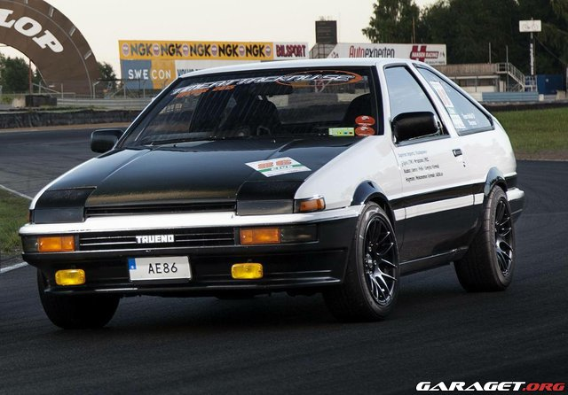
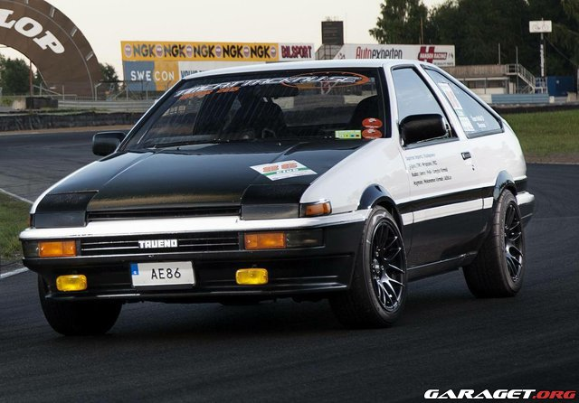

Bilar
Jag gillar bilar speciellt japanska bilar, det var det som fick mig att lära känna den japanska kulturen och så att jag valde japanska som moderna språk
Nissan Skyline Gtr R32
Datsun 240z
Toyota Supra Mk4
Toyota Sprinter Trueno
 
